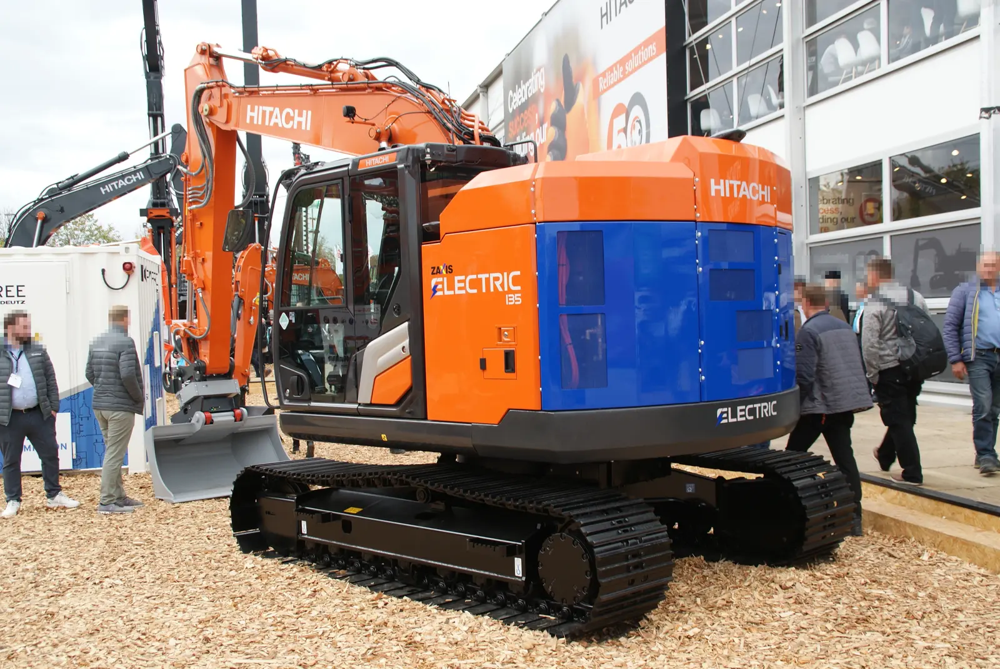

Volvo Construction Equipmentは2026年、電動のホイール式油圧ショベルや大型電動ダンプトラックなどに関する動きを発表しました。メーカー発表に基づく動向紹介であり、日本での一般販売や現場での性能を保証する記事ではありません。
2026年、メーカーが発表したこと
Volvo CEは、2026年4月に電動アーティキュレートダンプトラックA30 Electric・A40 Electricの量産開始を発表しました。また、EWR150 Electricというホイール式電動ショベルの欧州市場投入も発表しています。さらに2026年5月には、Hitachi Energyと電動機械・電源設備・エネルギー管理の連携に向けた協力覚書を発表しました。
現場から見るメリットと課題
| 観点 | 期待できること | 確認が必要なこと |
|---|---|---|
| 作業環境 | 現場での排気ガスを抑えられる | 発電・充電方法を含む環境負荷 |
| 騒音 | エンジン音がない構成では騒音源が変わる | 走行・油圧・作業・警報音は残る |
| 工程 | 機種と用途が合えば稼働計画に組込み可能 | 稼働時間、充電、電源設備と予備機 |
| コスト | 燃料・保守費が変わる可能性 | 初期投資、電力料金、充電設備 |
日本の現場で使えるか？
重要なのは「電動だからすべて解決」ではないことです。使用する機械の重量、搬入経路、必要出力、作業時間、充電インフラ、発電方法などを確認しなければなりません。日本での販売・レンタル状況は機種と地域によって異なるため、導入検討時に最新の国内販売店情報を確認しましょう。
静かでクリーンな工事を考える入口に
建機の電動化は近隣環境やエネルギーの制約を見直す大きなテーマです。一方、電動化だけで施工中の安全・騒音・工程のすべてが解決するわけではありません。現場に必要な成果を、無理の少ない方法で実現する視点が重要です。
情報源は上記のメーカー公式発表です。「期待できること」「導入課題」は本サイトによる一般的な考察であり、性能比較試験の結果ではありません。
「電動だから静か」の前に、現場のエネルギー計画
電動建機はエンジン駆動の排気やアイドリング音を抑える可能性がありますが、走行・油圧・アタッチメント・周辺機器の音は残ります。現場へ充電用の電源を引けるか、作業開始時刻までに充電できるか、1日の負荷変動に耐えられるかを具体的に確認します。
カタログを見るときの4つの落とし穴
- 稼働時間：軽負荷試験やメーカー指定の条件を、現場の連続高負荷作業へそのまま当てはめない。
- 充電時間：充電器出力だけでなく、受電容量・温度・充電制御・残量条件で変わる。
- 環境性能：現場排気の有無と、発電・輸送・製造を含む総排出量は区別する。
- コスト：本体価格だけでなく、電源設備、移動・充電待ち、レンタル、保守費を計算する。
日本の現場で試すなら
まず電源条件が整い、夜間・屋内・近隣対応などの理由が明確な小規模作業から、レンタルや試験導入の可否を確認する考え方が現実的です。国内で使用できる機種、電気設備、安全手順、保守拠点は地域と時点により異なるため、最新のメーカー・販売店情報を必ず照合してください。
電動建機の導入検討で必要な5項目
- 作業に必要な能力と1日の想定稼働時間
- 充電場所・充電器・ケーブルの配置と電源容量
- バッテリー残量が不足した場合の代替工程
- 搬入動線や作業エリアの安全管理
- 機種・地域ごとの販売・レンタル対応状況
発表会での仕様や「最大稼働時間」は個別現場での保証値ではありません。採用時には国内取扱事業者に使用条件を確認します。